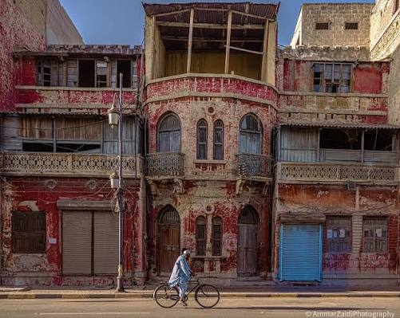

Colonial Architecture
Many of Karachi's oldest public buildings were built during British rule. They mix European designs with local ideas and materials.

Gothic Style
Gothic buildings have pointed arches, tall windows and detailed stonework. Empress Market and Merewether Tower are good examples.
Venetian Gothic
This style was inspired by the buildings of Venice. Frere Hall is the best known example in the city.
Indo-Saracenic Style
This style combined European design with South Asian and Islamic features such as domes, arches and decorated balconies. Several old buildings in the Saddar and Bunder Road area follow it.
Local Stone
Many old buildings in Karachi were built with yellow local stone, often called Gizri stone. It gives the old part of the city its warm, golden look.